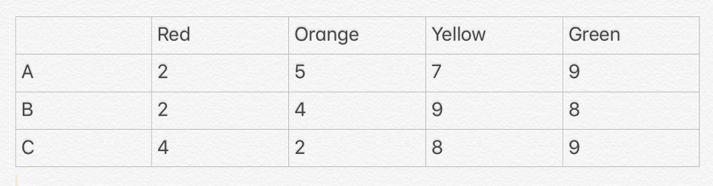

Three people A, B, C counted a bunch of balls of four colors $($ see table $)$.

Each of them correctly distinguished some two colors, and confused the numbers of the other two colours: one mixed up the red and orange, another - orange and yellow, and the third - yellow and green. The results of their calculations are given in the table. How many balls of each colour actually were there?
Errors in the calculation of red balls could only have been done by one of them, and the other two correctly counted the number of red balls. Therefore, there were 2 red balls. In the calculation of the red balls, C was mistaken, so he confused the red with the orange, and the yellow and green ones were correct. We get that there were then 8 yellow balls, and 9 green ones. All the remaining balls were orange. The total number of balls being considered was correct - 23. So, there were 4 orange balls.
Reds - 2, orange - 4, yellow - 8, green - 9.